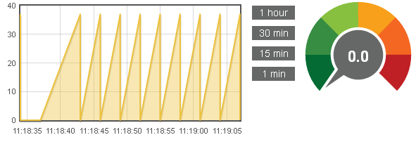

Forums : Problem with displaying the status
This page last changed on Dec 06, 2013 by preston.
Hello everyone.
I have a problem with displaying the status of my dimmer FGD211. When switching from OpenRemote UI (Webconsole, Android App), status is displayed correctly. But if I use the physical switch, then the status of the dimmer display incorrectly. Slider twitches in the UI and incorrectly built graph in EmonCMS.
Here's a screenshot EmonCMS when dimmer off through physical button. The values of the sensors in the UI jump to the value that was last set through the UI.

Controller version 2.1.0
A rule to check the status of the dimmer:
package org.openremote.controller.model.event global org.openremote.controller.statuscache.CommandFacade execute; global org.openremote.controller.statuscache.SwitchFacade switches; import org.openremote.controller.protocol.*; import java.lang.Integer; rule "DimmerStatus" timer(int: 2s 3s) when eval(true) then execute.command("dimmer -status-"); end
zwave.log:
DEBUG 2013-12-05 11:18:31,437 (Z-Wave): Building Z-Wave command DEBUG 2013-12-05 11:18:31,437 (Z-Wave): Z-Wave command: nodeId = 5 DEBUG 2013-12-05 11:18:31,437 (Z-Wave): Z-Wave command: command = status DEBUG 2013-12-05 11:18:31,437 (Z-Wave): Z-Wave command: paramValue = null DEBUG 2013-12-05 11:18:31,437 (Z-Wave): Z-Wave command created successfully DEBUG 2013-12-05 11:18:31,437 (Z-Wave): sending: 01 09 00 13 05 02 20 02 05 fe 3b DEBUG 2013-12-05 11:18:31,437 (Z-Wave): received: 06 DEBUG 2013-12-05 11:18:31,437 (Z-Wave): received: 01 04 01 13 01 e8 DEBUG 2013-12-05 11:18:31,437 (Z-Wave): sending: 06 DEBUG 2013-12-05 11:18:31,453 (Z-Wave): received: 01 05 00 13 fe 00 17 DEBUG 2013-12-05 11:18:31,453 (Z-Wave): sending: 06 DEBUG 2013-12-05 11:18:31,484 (Z-Wave): received: 01 09 00 04 00 05 03 20 03 00 d7 DEBUG 2013-12-05 11:18:31,484 (Z-Wave): sending: 06 DEBUG 2013-12-05 11:18:34,437 (Z-Wave): Building Z-Wave command DEBUG 2013-12-05 11:18:34,437 (Z-Wave): Z-Wave command: command = status DEBUG 2013-12-05 11:18:34,437 (Z-Wave): Z-Wave command: nodeId = 5 DEBUG 2013-12-05 11:18:34,437 (Z-Wave): Z-Wave command: paramValue = null DEBUG 2013-12-05 11:18:34,437 (Z-Wave): Z-Wave command created successfully DEBUG 2013-12-05 11:18:34,437 (Z-Wave): sending: 01 09 00 13 05 02 20 02 05 ff 3a DEBUG 2013-12-05 11:18:34,437 (Z-Wave): received: 06 01 04 01 13 01 e8 DEBUG 2013-12-05 11:18:34,437 (Z-Wave): sending: 06 DEBUG 2013-12-05 11:18:34,453 (Z-Wave): received: 01 05 00 13 ff 00 16 DEBUG 2013-12-05 11:18:34,453 (Z-Wave): sending: 06 DEBUG 2013-12-05 11:18:34,484 (Z-Wave): received: 01 09 00 04 00 05 03 20 03 00 d7 DEBUG 2013-12-05 11:18:34,484 (Z-Wave): sending: 06 DEBUG 2013-12-05 11:18:37,437 (Z-Wave): Building Z-Wave command DEBUG 2013-12-05 11:18:37,437 (Z-Wave): Z-Wave command: nodeId = 5 DEBUG 2013-12-05 11:18:37,437 (Z-Wave): Z-Wave command: command = status DEBUG 2013-12-05 11:18:37,437 (Z-Wave): Z-Wave command: paramValue = null DEBUG 2013-12-05 11:18:37,437 (Z-Wave): Z-Wave command created successfully DEBUG 2013-12-05 11:18:37,437 (Z-Wave): sending: 01 09 00 13 05 02 20 02 05 00 c5 DEBUG 2013-12-05 11:18:37,437 (Z-Wave): received: 06 DEBUG 2013-12-05 11:18:37,453 (Z-Wave): received: 01 04 01 13 01 e8 DEBUG 2013-12-05 11:18:37,453 (Z-Wave): sending: 06 DEBUG 2013-12-05 11:18:37,468 (Z-Wave): received: 01 09 00 04 00 05 03 20 03 00 d7 DEBUG 2013-12-05 11:18:37,468 (Z-Wave): sending: 06 DEBUG 2013-12-05 11:18:40,437 (Z-Wave): Building Z-Wave command DEBUG 2013-12-05 11:18:40,437 (Z-Wave): Z-Wave command: nodeId = 5 DEBUG 2013-12-05 11:18:40,437 (Z-Wave): Z-Wave command: command = status DEBUG 2013-12-05 11:18:40,437 (Z-Wave): Z-Wave command: paramValue = null DEBUG 2013-12-05 11:18:40,437 (Z-Wave): Z-Wave command created successfully DEBUG 2013-12-05 11:18:40,437 (Z-Wave): Message lock exists. Frame waiting: 01 09 00 13 05 02 20 02 05 01 c4 DEBUG 2013-12-05 11:18:40,484 (Z-Wave): Message lock exists. Frame waiting: 01 09 00 13 05 02 20 02 05 01 c4 DEBUG 2013-12-05 11:18:40,546 (Z-Wave): Message lock exists. Frame waiting: 01 09 00 13 05 02 20 02 05 01 c4 DEBUG 2013-12-05 11:18:40,593 (Z-Wave): Message lock exists. Frame waiting: 01 09 00 13 05 02 20 02 05 01 c4 DEBUG 2013-12-05 11:18:40,640 (Z-Wave): Message lock exists. Frame waiting: 01 09 00 13 05 02 20 02 05 01 c4 DEBUG 2013-12-05 11:18:40,687 (Z-Wave): Message lock exists. Frame waiting: 01 09 00 13 05 02 20 02 05 01 c4 DEBUG 2013-12-05 11:18:40,750 (Z-Wave): Message lock exists. Frame waiting: 01 09 00 13 05 02 20 02 05 01 c4 DEBUG 2013-12-05 11:18:40,796 (Z-Wave): Message lock exists. Frame waiting: 01 09 00 13 05 02 20 02 05 01 c4 DEBUG 2013-12-05 11:18:40,843 (Z-Wave): Message lock exists. Frame waiting: 01 09 00 13 05 02 20 02 05 01 c4 DEBUG 2013-12-05 11:18:40,890 (Z-Wave): Message lock exists. Frame waiting: 01 09 00 13 05 02 20 02 05 01 c4 DEBUG 2013-12-05 11:18:40,953 (Z-Wave): Message lock exists. Frame waiting: 01 09 00 13 05 02 20 02 05 01 c4 DEBUG 2013-12-05 11:18:41,000 (Z-Wave): Message lock exists. Frame waiting: 01 09 00 13 05 02 20 02 05 01 c4 DEBUG 2013-12-05 11:18:41,046 (Z-Wave): Message lock exists. Frame waiting: 01 09 00 13 05 02 20 02 05 01 c4 DEBUG 2013-12-05 11:18:41,093 (Z-Wave): Message lock exists. Frame waiting: 01 09 00 13 05 02 20 02 05 01 c4 DEBUG 2013-12-05 11:18:41,156 (Z-Wave): Message lock exists. Frame waiting: 01 09 00 13 05 02 20 02 05 01 c4 DEBUG 2013-12-05 11:18:41,203 (Z-Wave): Message lock exists. Frame waiting: 01 09 00 13 05 02 20 02 05 01 c4 DEBUG 2013-12-05 11:18:41,250 (Z-Wave): Message lock exists. Frame waiting: 01 09 00 13 05 02 20 02 05 01 c4 DEBUG 2013-12-05 11:18:41,296 (Z-Wave): Message lock exists. Frame waiting: 01 09 00 13 05 02 20 02 05 01 c4 DEBUG 2013-12-05 11:18:41,359 (Z-Wave): Message lock exists. Frame waiting: 01 09 00 13 05 02 20 02 05 01 c4 DEBUG 2013-12-05 11:18:41,406 (Z-Wave): Message lock exists. Frame waiting: 01 09 00 13 05 02 20 02 05 01 c4 DEBUG 2013-12-05 11:18:41,453 (Z-Wave): Message lock exists. Frame waiting: 01 09 00 13 05 02 20 02 05 01 c4 DEBUG 2013-12-05 11:18:41,500 (Z-Wave): Message lock exists. Frame waiting: 01 09 00 13 05 02 20 02 05 01 c4 DEBUG 2013-12-05 11:18:41,562 (Z-Wave): Message lock exists. Frame waiting: 01 09 00 13 05 02 20 02 05 01 c4 DEBUG 2013-12-05 11:18:41,609 (Z-Wave): Message lock exists. Frame waiting: 01 09 00 13 05 02 20 02 05 01 c4 DEBUG 2013-12-05 11:18:41,656 (Z-Wave): Message lock exists. Frame waiting: 01 09 00 13 05 02 20 02 05 01 c4 DEBUG 2013-12-05 11:18:41,718 (Z-Wave): Message lock exists. Frame waiting: 01 09 00 13 05 02 20 02 05 01 c4 DEBUG 2013-12-05 11:18:41,765 (Z-Wave): Message lock exists. Frame waiting: 01 09 00 13 05 02 20 02 05 01 c4 DEBUG 2013-12-05 11:18:41,812 (Z-Wave): Message lock exists. Frame waiting: 01 09 00 13 05 02 20 02 05 01 c4 DEBUG 2013-12-05 11:18:41,859 (Z-Wave): Message lock exists. Frame waiting: 01 09 00 13 05 02 20 02 05 01 c4 DEBUG 2013-12-05 11:18:41,921 (Z-Wave): Message lock exists. Frame waiting: 01 09 00 13 05 02 20 02 05 01 c4 DEBUG 2013-12-05 11:18:41,968 (Z-Wave): Message lock exists. Frame waiting: 01 09 00 13 05 02 20 02 05 01 c4 DEBUG 2013-12-05 11:18:42,015 (Z-Wave): Message lock exists. Frame waiting: 01 09 00 13 05 02 20 02 05 01 c4 DEBUG 2013-12-05 11:18:42,062 (Z-Wave): Message lock exists. Frame waiting: 01 09 00 13 05 02 20 02 05 01 c4 DEBUG 2013-12-05 11:18:42,125 (Z-Wave): Message lock exists. Frame waiting: 01 09 00 13 05 02 20 02 05 01 c4 DEBUG 2013-12-05 11:18:42,171 (Z-Wave): Message lock exists. Frame waiting: 01 09 00 13 05 02 20 02 05 01 c4 DEBUG 2013-12-05 11:18:42,218 (Z-Wave): Message lock exists. Frame waiting: 01 09 00 13 05 02 20 02 05 01 c4 DEBUG 2013-12-05 11:18:42,265 (Z-Wave): Message lock exists. Frame waiting: 01 09 00 13 05 02 20 02 05 01 c4 DEBUG 2013-12-05 11:18:42,328 (Z-Wave): Message lock exists. Frame waiting: 01 09 00 13 05 02 20 02 05 01 c4 DEBUG 2013-12-05 11:18:42,375 (Z-Wave): Message lock exists. Frame waiting: 01 09 00 13 05 02 20 02 05 01 c4 DEBUG 2013-12-05 11:18:42,421 (Z-Wave): Message lock exists. Frame waiting: 01 09 00 13 05 02 20 02 05 01 c4 DEBUG 2013-12-05 11:18:42,468 (Z-Wave): Message lock exists. Frame waiting: 01 09 00 13 05 02 20 02 05 01 c4 DEBUG 2013-12-05 11:18:42,531 (Z-Wave): Message lock exists. Frame waiting: 01 09 00 13 05 02 20 02 05 01 c4 DEBUG 2013-12-05 11:18:42,578 (Z-Wave): Message lock exists. Frame waiting: 01 09 00 13 05 02 20 02 05 01 c4 DEBUG 2013-12-05 11:18:42,625 (Z-Wave): Message lock exists. Frame waiting: 01 09 00 13 05 02 20 02 05 01 c4 DEBUG 2013-12-05 11:18:42,671 (Z-Wave): Message lock exists. Frame waiting: 01 09 00 13 05 02 20 02 05 01 c4 DEBUG 2013-12-05 11:18:42,734 (Z-Wave): Message lock exists. Frame waiting: 01 09 00 13 05 02 20 02 05 01 c4 DEBUG 2013-12-05 11:18:42,781 (Z-Wave): Message lock exists. Frame waiting: 01 09 00 13 05 02 20 02 05 01 c4 DEBUG 2013-12-05 11:18:42,828 (Z-Wave): Message lock exists. Frame waiting: 01 09 00 13 05 02 20 02 05 01 c4 DEBUG 2013-12-05 11:18:42,875 (Z-Wave): Message lock exists. Frame waiting: 01 09 00 13 05 02 20 02 05 01 c4 DEBUG 2013-12-05 11:18:42,937 (Z-Wave): Message lock exists. Frame waiting: 01 09 00 13 05 02 20 02 05 01 c4 DEBUG 2013-12-05 11:18:42,984 (Z-Wave): Message lock exists. Frame waiting: 01 09 00 13 05 02 20 02 05 01 c4 DEBUG 2013-12-05 11:18:43,031 (Z-Wave): Message lock exists. Frame waiting: 01 09 00 13 05 02 20 02 05 01 c4 DEBUG 2013-12-05 11:18:43,093 (Z-Wave): Message lock exists. Frame waiting: 01 09 00 13 05 02 20 02 05 01 c4 DEBUG 2013-12-05 11:18:43,140 (Z-Wave): Message lock exists. Frame waiting: 01 09 00 13 05 02 20 02 05 01 c4 DEBUG 2013-12-05 11:18:43,187 (Z-Wave): Message lock exists. Frame waiting: 01 09 00 13 05 02 20 02 05 01 c4 DEBUG 2013-12-05 11:18:43,234 (Z-Wave): Message lock exists. Frame waiting: 01 09 00 13 05 02 20 02 05 01 c4 DEBUG 2013-12-05 11:18:43,296 (Z-Wave): Message lock exists. Frame waiting: 01 09 00 13 05 02 20 02 05 01 c4 DEBUG 2013-12-05 11:18:43,343 (Z-Wave): Message lock exists. Frame waiting: 01 09 00 13 05 02 20 02 05 01 c4 DEBUG 2013-12-05 11:18:43,390 (Z-Wave): Message lock exists. Frame waiting: 01 09 00 13 05 02 20 02 05 01 c4 DEBUG 2013-12-05 11:18:43,437 (Z-Wave): Building Z-Wave command DEBUG 2013-12-05 11:18:43,437 (Z-Wave): Z-Wave command: command = status DEBUG 2013-12-05 11:18:43,437 (Z-Wave): Z-Wave command: nodeId = 5 DEBUG 2013-12-05 11:18:43,437 (Z-Wave): Z-Wave command: paramValue = null DEBUG 2013-12-05 11:18:43,437 (Z-Wave): Z-Wave command created successfully DEBUG 2013-12-05 11:18:43,437 (Z-Wave): Message lock exists. Frame waiting: 01 09 00 13 05 02 20 02 05 01 c4 DEBUG 2013-12-05 11:18:43,500 (Z-Wave): Timeout reached. Releasing lock. DEBUG 2013-12-05 11:18:43,500 (Z-Wave): sending: 01 09 00 13 05 02 20 02 05 01 c4 DEBUG 2013-12-05 11:18:43,500 (Z-Wave): Message lock exists. Frame waiting: 01 09 00 13 05 02 20 02 05 02 c7 DEBUG 2013-12-05 11:18:43,500 (Z-Wave): received: 06 DEBUG 2013-12-05 11:18:43,500 (Z-Wave): received: 01 04 01 13 01 e8 DEBUG 2013-12-05 11:18:43,546 (Z-Wave): sending: 06 DEBUG 2013-12-05 11:18:43,546 (Z-Wave): Message lock exists. Frame waiting: 01 09 00 13 05 02 20 02 05 02 c7 DEBUG 2013-12-05 11:18:43,546 (Z-Wave): received: 01 05 00 13 01 00 e8 DEBUG 2013-12-05 11:18:43,593 (Z-Wave): sending: 06 DEBUG 2013-12-05 11:18:43,593 (Z-Wave): sending: 01 09 00 13 05 02 20 02 05 02 c7 DEBUG 2013-12-05 11:18:43,593 (Z-Wave): received: 01 09 00 04 00 05 03 20 03 00 d7 DEBUG 2013-12-05 11:18:43,593 (Z-Wave): sending: 06 DEBUG 2013-12-05 11:18:43,625 (Z-Wave): received: 18 DEBUG 2013-12-05 11:18:43,625 (Z-Wave): Received CAN, resend last frame DEBUG 2013-12-05 11:18:43,625 (Z-Wave): sending: 06 DEBUG 2013-12-05 11:18:43,625 (Z-Wave): sending: 01 09 00 13 05 02 20 02 05 02 c7 DEBUG 2013-12-05 11:18:43,625 (Z-Wave): received: 06 DEBUG 2013-12-05 11:18:43,640 (Z-Wave): received: 01 04 01 13 01 e8 DEBUG 2013-12-05 11:18:43,640 (Z-Wave): sending: 06 DEBUG 2013-12-05 11:18:43,640 (Z-Wave): received: 01 05 00 13 02 00 eb DEBUG 2013-12-05 11:18:43,640 (Z-Wave): sending: 06 DEBUG 2013-12-05 11:18:43,671 (Z-Wave): received: 01 09 00 04 00 05 03 20 03 00 d7 DEBUG 2013-12-05 11:18:43,671 (Z-Wave): sending: 06 DEBUG 2013-12-05 11:18:46,437 (Z-Wave): Building Z-Wave command DEBUG 2013-12-05 11:18:46,437 (Z-Wave): Z-Wave command: nodeId = 5 DEBUG 2013-12-05 11:18:46,437 (Z-Wave): Z-Wave command: command = status DEBUG 2013-12-05 11:18:46,437 (Z-Wave): Z-Wave command: paramValue = null DEBUG 2013-12-05 11:18:46,437 (Z-Wave): Z-Wave command created successfully DEBUG 2013-12-05 11:18:46,437 (Z-Wave): sending: 01 09 00 13 05 02 20 02 05 03 c6 DEBUG 2013-12-05 11:18:46,453 (Z-Wave): received: 06 01 04 01 13 01 e8 DEBUG 2013-12-05 11:18:46,453 (Z-Wave): sending: 06 DEBUG 2013-12-05 11:18:46,468 (Z-Wave): received: 01 05 00 13 03 00 ea DEBUG 2013-12-05 11:18:46,468 (Z-Wave): sending: 06 DEBUG 2013-12-05 11:18:46,500 (Z-Wave): received: 01 09 00 04 00 05 03 20 03 00 d7 DEBUG 2013-12-05 11:18:46,500 (Z-Wave): sending: 06 DEBUG 2013-12-05 11:18:49,437 (Z-Wave): Building Z-Wave command DEBUG 2013-12-05 11:18:49,437 (Z-Wave): Z-Wave command: nodeId = 5 DEBUG 2013-12-05 11:18:49,437 (Z-Wave): Z-Wave command: command = status DEBUG 2013-12-05 11:18:49,437 (Z-Wave): Z-Wave command: paramValue = null DEBUG 2013-12-05 11:18:49,437 (Z-Wave): Z-Wave command created successfully DEBUG 2013-12-05 11:18:49,437 (Z-Wave): sending: 01 09 00 13 05 02 20 02 05 04 c1 DEBUG 2013-12-05 11:18:49,453 (Z-Wave): received: 06 01 04 01 13 01 e8 DEBUG 2013-12-05 11:18:49,453 (Z-Wave): sending: 06 DEBUG 2013-12-05 11:18:49,468 (Z-Wave): received: 01 05 00 13 04 00 ed DEBUG 2013-12-05 11:18:49,468 (Z-Wave): sending: 06 DEBUG 2013-12-05 11:18:49,484 (Z-Wave): received: 01 09 00 04 00 05 03 20 03 00 d7 DEBUG 2013-12-05 11:18:49,484 (Z-Wave): sending: 06 DEBUG 2013-12-05 11:18:52,437 (Z-Wave): Building Z-Wave command DEBUG 2013-12-05 11:18:52,437 (Z-Wave): Z-Wave command: nodeId = 5 DEBUG 2013-12-05 11:18:52,437 (Z-Wave): Z-Wave command: command = status DEBUG 2013-12-05 11:18:52,437 (Z-Wave): Z-Wave command: paramValue = null DEBUG 2013-12-05 11:18:52,437 (Z-Wave): Z-Wave command created successfully DEBUG 2013-12-05 11:18:52,437 (Z-Wave): sending: 01 09 00 13 05 02 20 02 05 05 c0 DEBUG 2013-12-05 11:18:52,453 (Z-Wave): received: 06 01 04 01 13 01 e8 DEBUG 2013-12-05 11:18:52,453 (Z-Wave): sending: 06 DEBUG 2013-12-05 11:18:52,468 (Z-Wave): received: 01 05 00 13 05 00 ec DEBUG 2013-12-05 11:18:52,468 (Z-Wave): sending: 06 DEBUG 2013-12-05 11:18:52,484 (Z-Wave): received: 01 09 00 04 00 05 03 20 03 00 d7 DEBUG 2013-12-05 11:18:52,484 (Z-Wave): sending: 06 DEBUG 2013-12-05 11:18:55,437 (Z-Wave): Building Z-Wave command DEBUG 2013-12-05 11:18:55,437 (Z-Wave): Z-Wave command: nodeId = 5 DEBUG 2013-12-05 11:18:55,437 (Z-Wave): Z-Wave command: command = status DEBUG 2013-12-05 11:18:55,437 (Z-Wave): Z-Wave command: paramValue = null DEBUG 2013-12-05 11:18:55,437 (Z-Wave): Z-Wave command created successfully DEBUG 2013-12-05 11:18:55,437 (Z-Wave): sending: 01 09 00 13 05 02 20 02 05 06 c3 DEBUG 2013-12-05 11:18:55,453 (Z-Wave): received: 06 01 04 01 13 01 e8 DEBUG 2013-12-05 11:18:55,453 (Z-Wave): sending: 06 DEBUG 2013-12-05 11:18:55,468 (Z-Wave): received: 01 05 00 13 06 00 ef DEBUG 2013-12-05 11:18:55,468 (Z-Wave): sending: 06 DEBUG 2013-12-05 11:18:55,484 (Z-Wave): received: 01 09 00 04 00 05 03 20 03 00 d7 DEBUG 2013-12-05 11:18:55,484 (Z-Wave): sending: 06 DEBUG 2013-12-05 11:18:58,453 (Z-Wave): Building Z-Wave command DEBUG 2013-12-05 11:18:58,453 (Z-Wave): Z-Wave command: nodeId = 5 DEBUG 2013-12-05 11:18:58,453 (Z-Wave): Z-Wave command: command = status DEBUG 2013-12-05 11:18:58,453 (Z-Wave): Z-Wave command: paramValue = null DEBUG 2013-12-05 11:18:58,453 (Z-Wave): Z-Wave command created successfully DEBUG 2013-12-05 11:18:58,453 (Z-Wave): sending: 01 09 00 13 05 02 20 02 05 07 c2 DEBUG 2013-12-05 11:18:58,453 (Z-Wave): received: 06 01 04 01 13 01 e8 DEBUG 2013-12-05 11:18:58,453 (Z-Wave): sending: 06 DEBUG 2013-12-05 11:18:58,468 (Z-Wave): received: 01 05 00 13 07 00 ee DEBUG 2013-12-05 11:18:58,468 (Z-Wave): sending: 06 DEBUG 2013-12-05 11:18:58,515 (Z-Wave): received: 01 09 00 04 00 05 03 20 03 00 d7 DEBUG 2013-12-05 11:18:58,515 (Z-Wave): sending: 06 DEBUG 2013-12-05 11:19:01,437 (Z-Wave): Building Z-Wave command DEBUG 2013-12-05 11:19:01,437 (Z-Wave): Z-Wave command: command = status DEBUG 2013-12-05 11:19:01,437 (Z-Wave): Z-Wave command: nodeId = 5 DEBUG 2013-12-05 11:19:01,437 (Z-Wave): Z-Wave command: paramValue = null DEBUG 2013-12-05 11:19:01,437 (Z-Wave): Z-Wave command created successfully DEBUG 2013-12-05 11:19:01,437 (Z-Wave): sending: 01 09 00 13 05 02 20 02 05 08 cd DEBUG 2013-12-05 11:19:01,437 (Z-Wave): received: 06 DEBUG 2013-12-05 11:19:01,437 (Z-Wave): received: 01 04 01 13 01 e8 DEBUG 2013-12-05 11:19:01,437 (Z-Wave): sending: 06 DEBUG 2013-12-05 11:19:01,453 (Z-Wave): received: 01 05 00 13 08 00 e1 DEBUG 2013-12-05 11:19:01,453 (Z-Wave): sending: 06 DEBUG 2013-12-05 11:19:01,468 (Z-Wave): received: 01 09 00 04 00 05 03 20 03 00 d7 DEBUG 2013-12-05 11:19:01,468 (Z-Wave): sending: 06 DEBUG 2013-12-05 11:19:04,437 (Z-Wave): Building Z-Wave command DEBUG 2013-12-05 11:19:04,437 (Z-Wave): Z-Wave command: command = status DEBUG 2013-12-05 11:19:04,437 (Z-Wave): Z-Wave command: nodeId = 5 DEBUG 2013-12-05 11:19:04,437 (Z-Wave): Z-Wave command: paramValue = null DEBUG 2013-12-05 11:19:04,437 (Z-Wave): Z-Wave command created successfully DEBUG 2013-12-05 11:19:04,437 (Z-Wave): sending: 01 09 00 13 05 02 20 02 05 09 cc DEBUG 2013-12-05 11:19:04,437 (Z-Wave): received: 06 01 04 01 13 01 e8 DEBUG 2013-12-05 11:19:04,437 (Z-Wave): sending: 06 DEBUG 2013-12-05 11:19:04,453 (Z-Wave): received: 01 05 00 13 09 00 e0 DEBUG 2013-12-05 11:19:04,453 (Z-Wave): sending: 06 DEBUG 2013-12-05 11:19:04,484 (Z-Wave): received: 01 09 00 04 00 05 03 20 03 00 d7 DEBUG 2013-12-05 11:19:04,484 (Z-Wave): sending: 06
{kind=link}